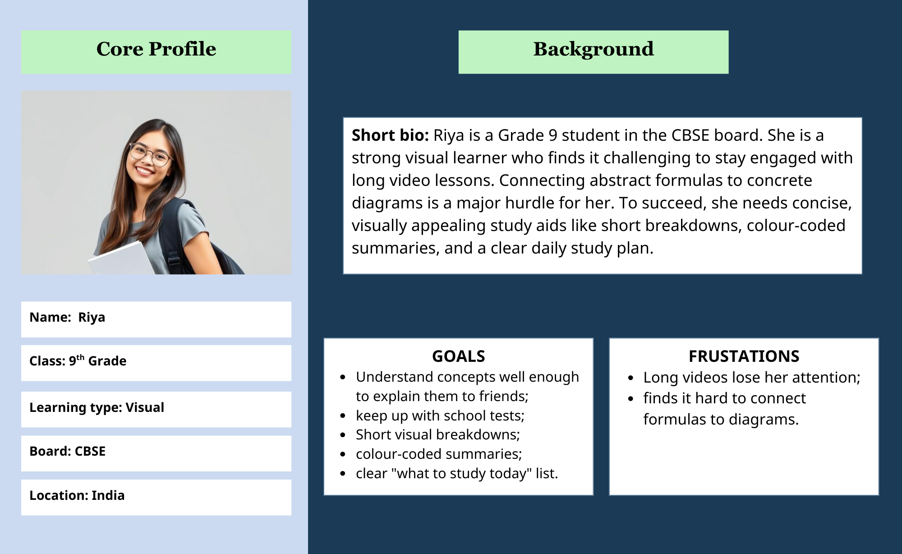
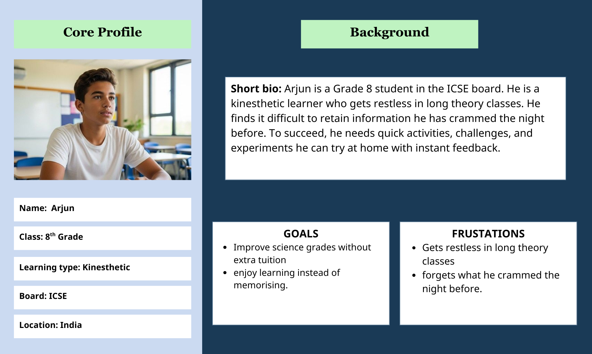
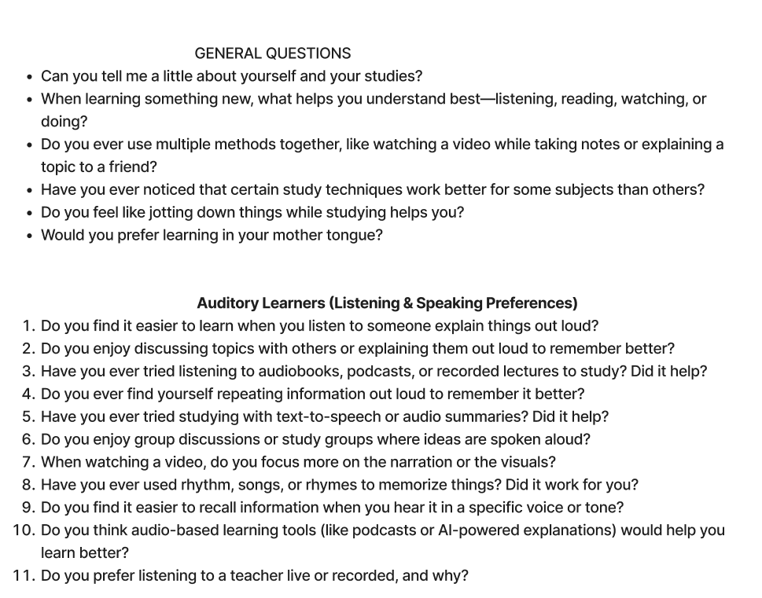

Noogin Nooks
Personalized learning companion
An AI-first learning companion that adapts lessons to each student's style – auditory, visual, linguistic, or kinesthetic – delivering short, curriculum-aligned micro-lessons that fit into real school days.
The case study below walks through research, user flows, brand system, and final app screens.


01 · Overview
Why Noogin Nooks?
Students are often given one-size-fits-all content. Noogin Nooks explores what happens when the format of learning is as adaptive as the topics themselves.
Problem statement · How might we increase student engagement and retention by delivering curriculum-aligned micro-lessons in formats that match each student's learning style?
- Generic learning content rarely considers how different students absorb information. Time is spent, but little sticks.
- During onboarding, students take a short quiz that detects their dominant learning preferences—visual, auditory, linguistic, or kinesthetic—along with confidence in each subject.
- Lessons are delivered as 5–10 minute micro-sessions: visuals & diagrams for visual learners, concise audio recaps for auditory learners, text + examples for linguistic learners, and quick hands-on prompts for kinesthetic learners.
- An AI mascot, Nook, guides each learner with friendly feedback, nudges, and suggestions to try alternate formats when attention drops.
02 · Research
Understanding the space
I combined competitor analysis, stakeholder mapping, and user interviews to understand where current ed-tech tools succeed—and where they fail students and parents.
Affinity themes
Students want one place where school topics, practice and recap material live together, instead of jumping across apps.
They don't want to miss "important" concepts or exams. Visible streaks and progress give a sense of momentum.
Parents care less about fancy visuals and more about clear progress, time spent, and how to support at home.
Research themes & problems
- Short, structured sessions increase completion rates.
- Format mismatch causes low retention even when time is spent.
- Parents want simple progress metrics and suggestions for support at home.
- They need reassurance that screen time is actually productive.
- Platforms optimise for content breadth, not for how it is delivered.
- Opportunity: personalised micro-learning assembled from modular content blocks.
Affinity Mapping

Competitor & SWOT Analysis
Competitor Analysis

SWOT Analysis

User personas


User interviews
Conducted in-depth interviews with students and parents to understand pain points, learning habits, and expectations from educational apps.

03 · Process
From onboarding to learning loop
I mapped the journey from installation to first "aha" moment, ensuring that students experience a clear value story within the first few minutes.
User journey mapping

Information architecture
The app structure prioritizes quick access to lessons while maintaining clear navigation across subjects and progress tracking.
Design timeline
Problem statement, objectives, USP, competitor scan, user interviews, affinity maps, journey mapping.
User flows, information architecture, early concepts for Nook (the mascot).
High-fidelity screens, primary user flows, usability sessions with students, quick iterations on copy and navigation.
ITERATIONS
The ever-so challenging work of early wireframes, colors, illustrations and iterations.
04 · Wireframes
Wireframes
Early wireframe explorations mapping out key screens and interactions before moving into high-fidelity design.


05 · Brand
Building a calm but energetic identity
Noogin Nooks needed to feel trustworthy for parents, but playful and energetic for students. The visual language balances a warm, paper-like butter base with vibrant accents.
Colour system
Built around a warm Butter base paired with rich Ganache typography and energetic pops of terracotta orange, mustard, olive, blush, and periwinkle blue.
Meet Nook – The learning companion
Nook is the friendly AI mascot that guides students through their learning journey. Designed to feel approachable and encouraging, Nook adapts its tone based on student progress and provides contextual nudges when needed.
- Personality: Friendly, patient, and subtly motivating without being pushy or infantilizing.
- Role: Suggests next steps, celebrates wins, and gently encourages trying alternate formats when a concept isn't clicking.
- Visual design: Soft, rounded character with warm gradient colors that match the app's accent palette.
- Tone: Conversational and age-appropriate, adapting language for different grade levels.
06 · App screens
Final screens
Key screens from the Noogin Nooks experience showcasing the onboarding flow, learning pathways, and progress tracking.


07 · Iterations
Refining through feedback
Key screens that evolved based on user testing and stakeholder feedback.
Before · Iteration

Why this changed
The screen on the left was one our first iterations. We used a real image to ensure that the user feels a connection to the app. Though, as we kept testing it, we realised the user feels more comfortable with illustrations and it fascinates them.
After · Final

Before · Iteration

Why this changed
Again one of our first iterations where we thought that kids would be more happy and learning adaption would be more applicable with colors. We realised it was just throwing them off and distracting them. We switched our whole color pallete to more muted, yet colorful tones.
After · Final